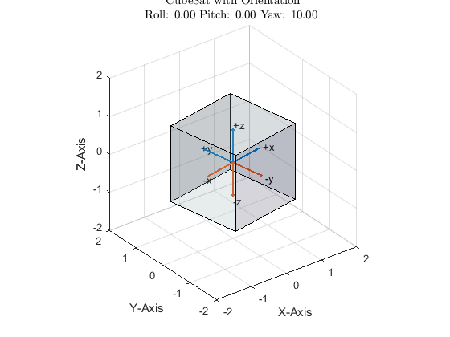

Contents
ECE 580 Project, Mathematical Model for Cubesat Attitude Sensors
-------------------------------------------------------------------------
Authors: Sergio Ribeiro Date: 07-MAY-2022 Class: ECE 580 Small Satellite Design
-------------------------------------------------------------------------
The purpose of this project is to provide a mathematical model for a cubesat satellite attitude sensor system. The sensor system is a photodiode on each face of the cubesat. There are six sensors in all. The purpose of this program is to model the response of the photodiodes to the sunlight hitting the cubesat in different orientations. For simplicity we will consider a cube of size 2U x 2U x 2U. We are not using a unit cube because we would like our vectors for describing the cube orientation to be unit vectors.
-------------------------------------------------------------------------
clearvars
clc
clf
format long
Sun Source Simulation
The sun source will be simulated as a constant flux vector field. It is a constant vector value at all points in space around the cube. The flux value is expressed in W/m^2
Sun_Flux = [12; 82; 7]; SunFluxStruct = struct('SunFluxX', Sun_Flux(1), 'SunFluxY', Sun_Flux(2), ... 'SunFluxZ', Sun_Flux(3)); disp('SUN FLUX VECTOR'); disp(SunFluxStruct);
SUN FLUX VECTOR
SunFluxX: 12
SunFluxY: 82
SunFluxZ: 7
Cube Setup
% Setup our origin unit vectors origin = [0; 0; 0]; north_x = [1; 0; 0]; north_y = [0; 1; 0]; north_z = [0; 0; 1]; south_x = [-1; 0; 0]; south_y = [0; -1; 0]; south_z = [0; 0; -1]; cube_verts = [1, 1, 1; -1, 1, 1; 1, 1, -1; -1, 1, -1; ... 1, -1, 1; -1, -1, 1; 1, -1, -1; -1, -1, -1]; cube_faces = [1, 2, 4, 3; 5, 6, 8, 7; ... 1, 5, 7, 3; 2, 6, 8, 4; ... 1, 5, 6, 2; 3, 7, 8, 4]; % Create a figure showing the cubesat that we are considering figure(1) hold on grid on title('Original CubeSat Orientation', 'interpreter', 'latex'); quiver3(origin, origin, origin, north_x, north_y, north_z, ... 'LineWidth', 1.5); text(north_x, north_y, north_z, {'+x', '+y', '+z'}); quiver3(origin, origin, origin, south_x, south_y, south_z, ... 'LineWidth', 1.5); text(south_x, south_y, south_z, {'-x', '-y', '-z'}); axis([-2,2,-2,2,-2,2]); xlabel('X-Axis'); ylabel('Y-Axis'); zlabel('Z-Axis'); patch('Vertices', cube_verts, 'Faces', cube_faces, ... 'FaceVertexCData', bone(6), 'FaceColor', 'flat', ... 'FaceAlpha', 0.2) view(3) axis vis3d rotate3d
Pitch, Yaw and Roll Matrices
In order to simulate the cube turning in different orientations we need to specify how it turns about the three axes by degrees. These changes are referred to as 'pitch', 'roll' and 'yaw'. Yaw is rotation about the z-axis in a counter-clockwise fashion. Pitch is a rotation about the y-axis in a counter-clockwise fashion. Roll is a rotation about the x-axis in a counter-clockwise fashion.
% Make use of MATLABs built in DCM (Direction Cosine Matrix) to compute the % rotation matrix and specify the rotation sequence (i.e. XYZ, ZYX etc.) roll = 0; % X Rotation pitch = 0; % Y Rotation yaw = 10; % Z Rotation rot_matrix = angle2dcm(deg2rad(roll), deg2rad(pitch), deg2rad(yaw), 'XYZ');
Rotated Cube
This section will test out our roll, pitch and yaw matrix to see if we can get a cube that is properly rotated
CubeOrientation = struct('Roll', roll, 'Pitch', pitch, 'Yaw', yaw); disp('CURRENT CUBE ORIENTATION'); disp(CubeOrientation); north_x_rot = rot_matrix * north_x; north_y_rot = rot_matrix * north_y; north_z_rot = rot_matrix * north_z; south_x_rot = rot_matrix * south_x; south_y_rot = rot_matrix * south_y; south_z_rot = rot_matrix * south_z; cube_verts_rot = cube_verts * rot_matrix; figure(2) hold on grid on title({'CubeSat with Orientation', ... sprintf('Roll: %2.2f Pitch: %2.2f Yaw: %2.2f ', roll, pitch, yaw)}, ... 'interpreter', 'latex'); quiver3(origin, origin, origin, north_x_rot, north_y_rot, north_z_rot, ... 'LineWidth', 1.5); text(north_x_rot, north_y_rot, north_z_rot, {'+x', '+y', '+z'}) quiver3(origin, origin, origin, south_x_rot, south_y_rot, south_z_rot, ... 'LineWidth', 1.5); text(south_x_rot, south_y_rot, south_z_rot, {'-x', '-y', '-z'}) xlabel('X-Axis'); ylabel('Y-Axis'); zlabel('Z-Axis'); axis([-2,2,-2,2,-2,2]); patch('Vertices', cube_verts_rot, 'Faces', cube_faces, ... 'FaceVertexCData', bone(6), 'FaceColor', 'flat', ... 'FaceAlpha', 0.2) view(3) axis vis3d rotate3d
CURRENT CUBE ORIENTATION
Roll: 0
Pitch: 0
Yaw: 10
 Compute the Light Flux
This section will compute the light flux through each cube face The faces will be named according to which unit vector is normal to the surface and the positive vectors will be referred to as 'North' and negative vectors will be referred to as 'South'
CubeArea = 4; disp('LIGHT FLUX RECEIVED AT EACH CUBE FACE'); disp('(NEGATIVE VALUES HERE ARE PRESENTED FOR DIAGNOSTIC PURPOSES)'); CubeFlux = struct('NorthX', -CubeArea * dot(Sun_Flux, north_x_rot), ... 'NorthY', -CubeArea * dot(Sun_Flux, north_y_rot), ... 'NorthZ', -CubeArea * dot(Sun_Flux, north_z_rot), ... 'SouthX', -CubeArea * dot(Sun_Flux, south_x_rot), ... 'SouthY', -CubeArea * dot(Sun_Flux, south_y_rot), ... 'SouthZ', -CubeArea * dot(Sun_Flux, south_z_rot)); disp(CubeFlux);
LIGHT FLUX RECEIVED AT EACH CUBE FACE
(NEGATIVE VALUES HERE ARE PRESENTED FOR DIAGNOSTIC PURPOSES)
NorthX: 9.685830130167169
NorthY: -3.313520555160169e+02
NorthZ: -28
SouthX: -9.685830130167169
SouthY: 3.313520555160169e+02
SouthZ: 28
Get Angles
This portion of the code gets the angle associated with each dot product in an attempt to reconstruct the roll, pitch and yaw.
Max_Flux = CubeArea * norm(Sun_Flux); disp('COMPUTE ANGLES FROM CUBE FACE TO FLUX VECTOR'); CubeAngles = struct('NorthX', acosd(CubeFlux.NorthX/Max_Flux), ... 'NorthY', acosd(CubeFlux.NorthY/Max_Flux), ... 'NorthZ', acosd(CubeFlux.NorthZ/Max_Flux), ... 'SouthX', acosd(CubeFlux.SouthX/Max_Flux), ... 'SouthY', acosd(CubeFlux.SouthY/Max_Flux), ... 'SouthZ', acosd(CubeFlux.SouthZ/Max_Flux)); disp(CubeAngles);
COMPUTE ANGLES FROM CUBE FACE TO FLUX VECTOR
NorthX: 88.331593096686532
NorthY: 1.748904680507873e+02
NorthZ: 94.828095794854676
SouthX: 91.668406903313453
SouthY: 5.109531949212661
SouthZ: 85.171904205145324